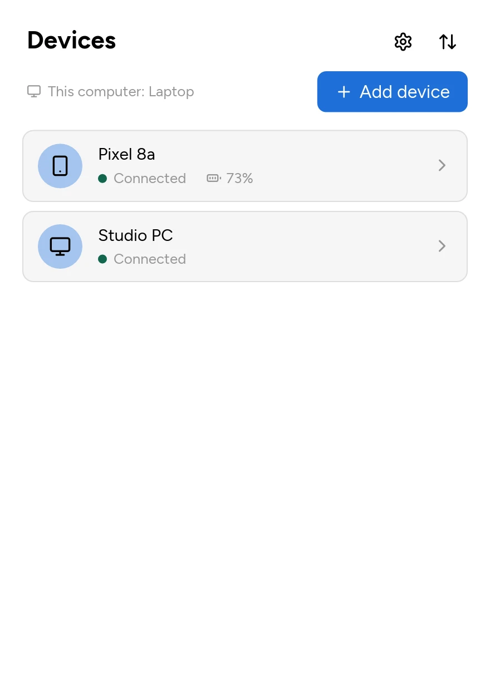
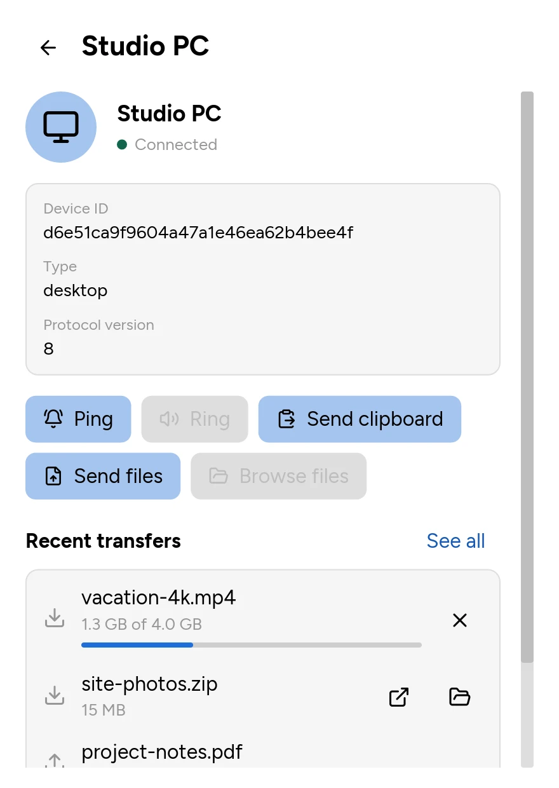
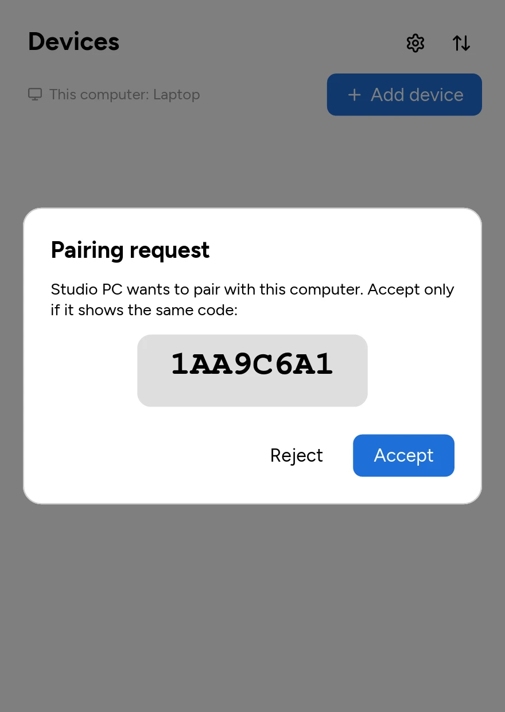
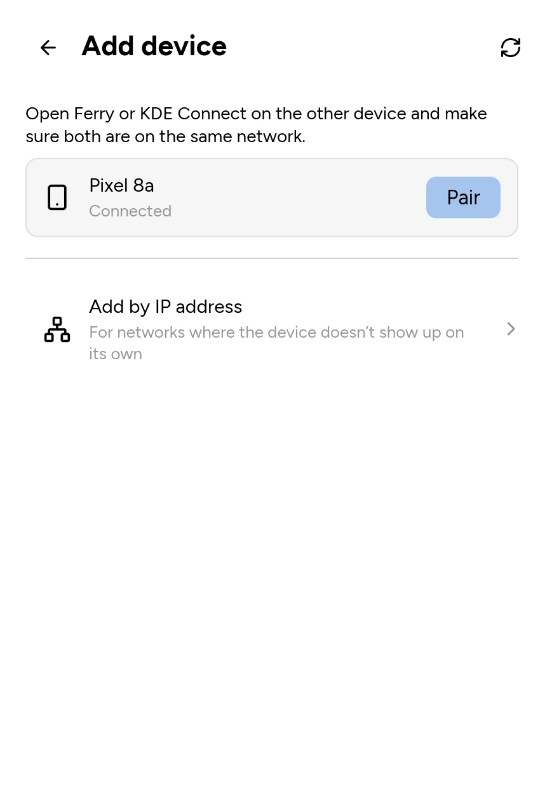
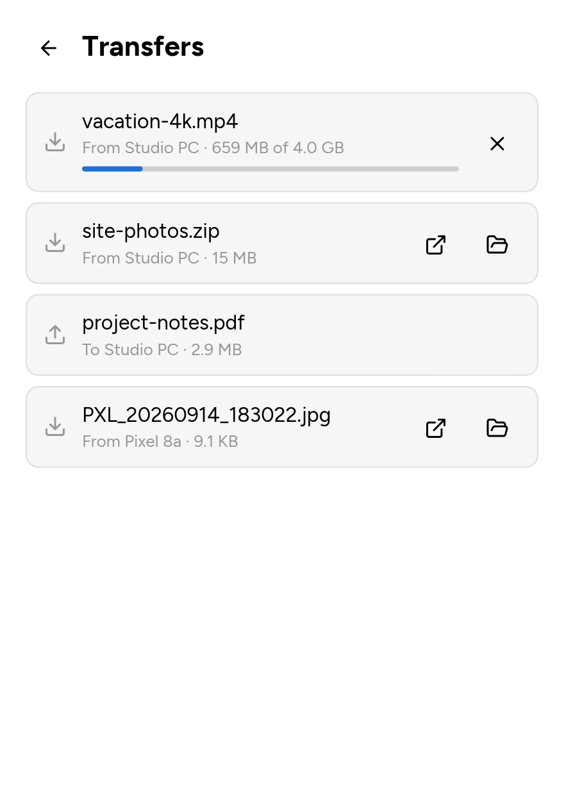
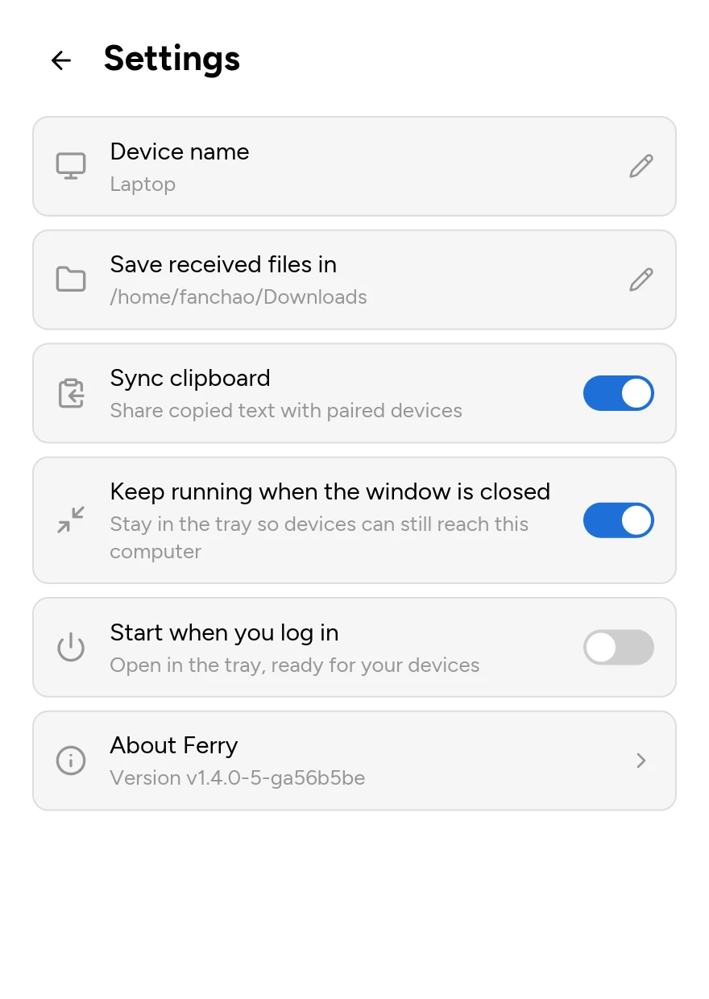
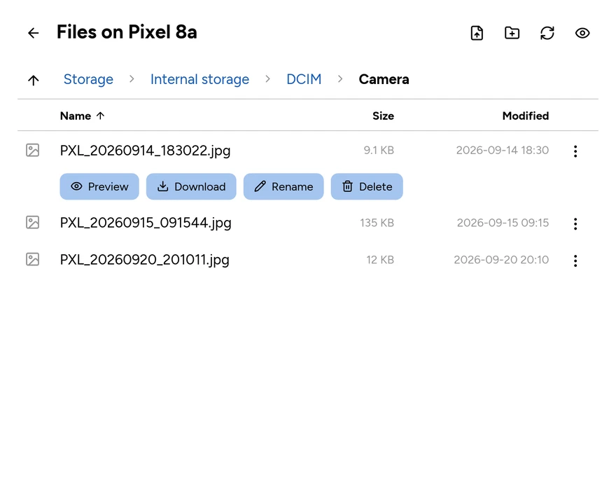
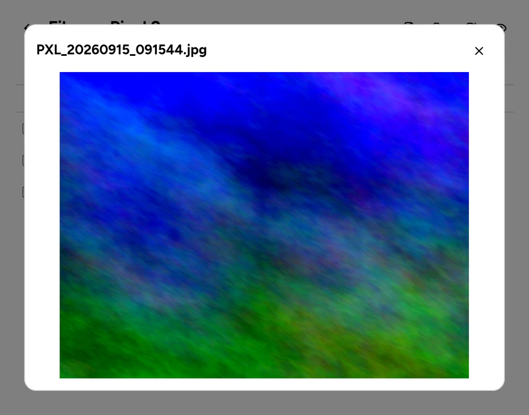

Ferry lets your computer and phone share files and the clipboard over the local network. There is no cloud service and no account; data goes directly between your devices. Ferry is open source and written in Rust, with one native app for macOS, Linux and Windows.
Ferry speaks the protocol of KDE Connect, the KDE project's app for connecting devices. Install KDE Connect on your phone, from Google Play or F-Droid (source), and Ferry on your computer, then pair them once.
Features
- Send files, from a file picker or by dropping them on the window
- Share the clipboard (text)
- Browse a phone's files: download, upload, rename, delete and preview
- See a device's battery level, ping it, or make it ring to find it
- Tray icon, desktop notifications, and light and dark themes
- Pairing confirmed with a code on both screens; TLS on every connection
Download
Latest version: {{tag}}
| Platform | Package | Size |
|---|---|---|
| macOS 12+ (Apple Silicon and Intel) | DMG | {{macos_size}} |
| Windows (x64) | Installer | {{windows_size}} |
| Debian, Ubuntu (x86_64) | .deb | {{deb_amd64_size}} |
| Debian, Ubuntu (arm64) | .deb | {{deb_arm64_size}} |
| Arch Linux | PKGBUILD | {{arch_size}} |
Older versions and release notes are on GitHub Releases.
Screenshots






Browsing a phone's files


Status
Ferry is young. Pairing, clipboard sync and file transfer have been tested with KDE Connect for Android, but not yet with KDE Connect on other desktops. Known gaps are listed in ARCHITECTURE.md. Please report bugs on GitHub; pull requests are welcome.
Sponsor
Ferry is free and developed in spare time. If you find it useful, please consider sponsoring it on GitHub.